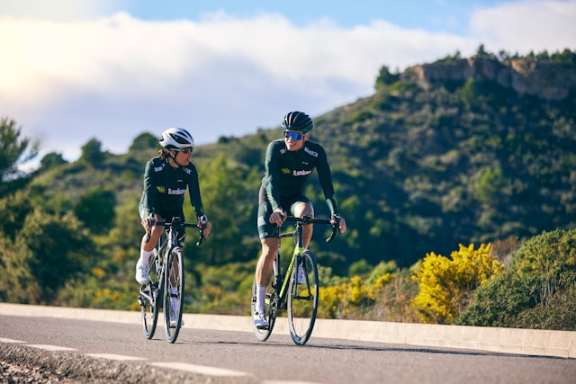
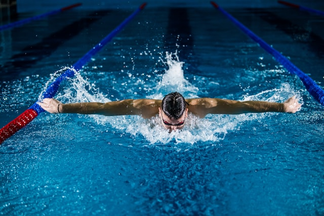
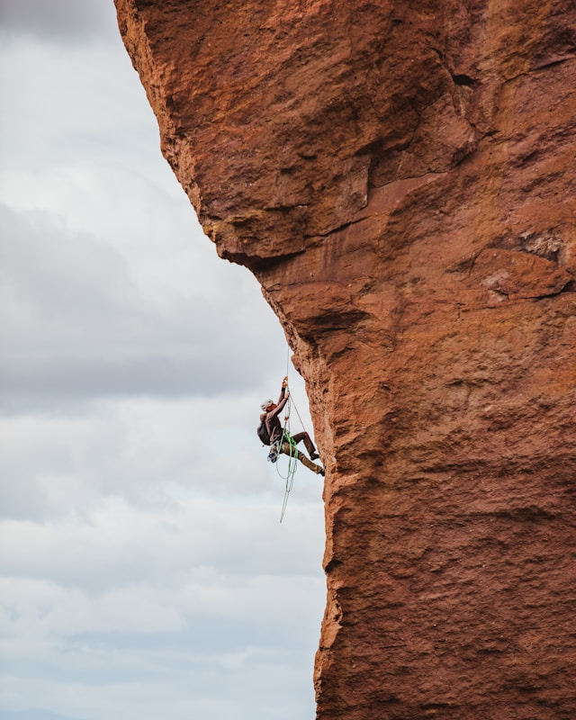

Running is a method of terrestrial locomotion where humans or animals move quickly on foot, characterized by an "aerial phase" where both feet are off the ground. It is a sport, a fitness activity, or a form of rapid transport.

The 80/20 rule is simple. It states that you should spend 80% of your training time running at an easy, conversational pace, and the other 20% at a moderate to hard intensity.
Cycling is mainly an aerobic activity, which means that your heart, blood vessels and lungs all get a workout. You will breathe deeper, perspire and experience increased body temperature, which will improve your overall fitness level.

The health benefits of regular cycling include: increased cardiovascular fitness.
Swimming is the self-propulsion of a body through water, combining arm/leg motions with natural buoyancy for recreation, sport, exercise, or survival. It offers a low-impact, full-body workout that improves cardiovascular health, strength, and flexibility, often used for rehabilitation.

Key styles include freestyle, breaststroke, backstroke, and butterfly
Climbing, as a noun, refers to the sport or activity of ascending steep objects like rocks, mountains, or walls, often using hands and feet. It also acts as an adjective for things growing upward (e.g., "climbing roses") or as a verb meaning to move upward, increase in intensity, or ascend

There are three main types of roped climbing: autobelay, top rope, and lead climbing